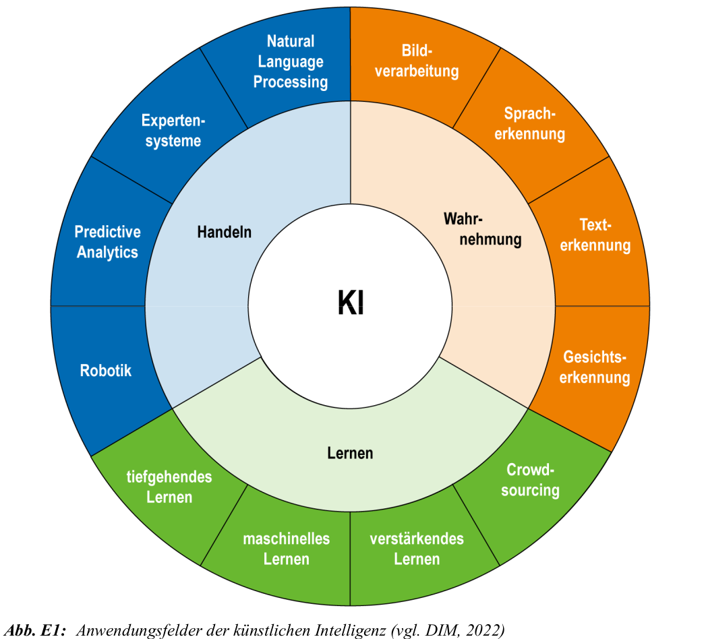

Zielsetzung und Definition
Motivation und Zielsetzung
- klassische Software muss bei Prozessänderungen neu angepasst werden
- dies verursacht hohe Kosten und Instandhaltungsaufwand
- künstliche Intelligenz (KI) soll sich adaptiv anpassen können
- Ziel: Systeme, die selbst lernen und Wissen übertragen können
- KI nutzt große Datenmengen zur Lösung komplexer Aufgaben
Interdisziplinarität und Definition
- KI vereint Erkenntnisse aus Logik, Statistik, Neurobiologie, Linguistik usw.
- Ziel: Systeme, die intelligent auf Probleme reagieren können
- keine einheitliche Definition, aber zentrale Eigenschaften:
- selbständige Problembearbeitung
- lernfähig, adaptiv, generalisierend
starke vs. schwache KI – Anwendungsfelder
starke vs. schwache KI
- starke KI: simuliert menschliches Denken & Bewusstsein
- Ziel: vollständiger Ersatz menschlicher Intelligenz in allen Bereichen
- bisher rein hypothetisch, keine realen Anwendungen
- schwache KI: löst spezifische Aufgaben auf intelligente Weise
- basiert auf Algorithmen, heute weit verbreitet
Historische Ursprünge & Begriffsprägung
- Begriff „Artificial Intelligence“ durch John McCarthy (1956)
- Ziel: Maschinen bauen, die intelligentes Verhalten imitieren
- Alan Turing: Maschine ist intelligent, wenn sie nicht erkennbar ist
- Übersetzung „künstlich“ statt „simuliert“ prägt deutsches Verständnis
Anwendungsfelder von KI
- Sprachverarbeitung (NLP)
- Bildverarbeitung (NIP)
- Expertensysteme mit breiter Wissensbasis
- Robotik: autonome mechanische Systeme
- Kombination dieser Felder in der Praxis üblich

Geschichte der KI & Entwicklungsetappen
Geschichte der KI
- Begriff „Artificial Intelligence“ stammt von John McCarthy (1956)
- Ziel: Maschinen bauen, die Aspekte menschlicher Intelligenz nachahmen
- Begriff wurde später kritisch gesehen, setzte sich aber durch
- Alan Turing prägte mit dem Turing-Test eine erste KI-Definition
- Wenn ein Mensch nicht erkennt, ob er mit Maschine oder Mensch spricht: Maschine gilt als intelligent
Entwicklungsetappen
- 1966: ELIZA – regelbasierter Chatbot von Weizenbaum
- Reaktion: naives Vertrauen in Maschinen
- Weizenbaum wurde später KI-Kritiker
- 1973: PROLOG – logikorientierte Sprache, stark in Europa
- 1980er: KI-Hype – kommerzielles PROLOG, erste Firmenlösungen
- 1988: DFKI-Gründung – deutsches KI-Zentrum mit >250 Projekten
- 1997: RoboCup – Fußballturnier autonomer Roboter
- 2000er: ML und Bayes – maschinelles Lernen gewinnt an Relevanz
Meilensteine der KI
- 1637: René Descartes – unterscheidet erstmals zwischen ``automatischer Maschine’’ und lernfähigem System
- 1950: Alan Turing – entwickelt den Turing-Test als Kriterium für maschinelle Intelligenz
- 1956: John McCarthy – organisiert die KI-Gründungskonferenz am Dartmouth College, USA
- 1966: ELIZA (Joseph Weizenbaum) – erster Chatbot, erzeugt große öffentliche Resonanz
- 1982: Japan startet Fünfte-Generation-Projekt – 400 Mio. Dollar für KI-Entwicklung, bleibt ohne große Erfolge
- 1996: Deep Blue (IBM) – besiegt Schachweltmeister Garri Kasparow
- 2002: ROOMBA (iRobot) – erster autonomer Haushaltsroboter im Massenmarkt
- 2010: Watson (IBM) – gewinnt gegen menschliche Champions in der Quizshow JEOPARDY!
- 2011: Siri (Apple) – KI-basierter Sprachassistent wird massentauglich und Teil von iOS
- 2015: Bayesian Program Learning (MIT, NYU, Toronto) – KI erkennt handgeschriebene Zeichen besser als Menschen, oft nach nur einem Beispiel
- 2016: AlphaGo (DeepMind) – besiegt Go-Weltmeister Lee Sedol mit kreativen Zügen, die zuvor als ``nicht menschlich’’ galten
- 2017: Waymo (Google-Tochter) – startet Testbetrieb autonomer Taxis in Phoenix, Arizona
Rechtlicher Rahmen
Chancen und Risiken
- KI bietet enormes Potenzial – aber auch Risiken für Grundrechte
- wichtigste Rechtsgrundlage: EU-Datenschutzgrundverordnung (DSGVO)
- Selbstregulierung: z. B. Partnership on AI (Google, IBM, OpenAI etc.)
- zentrale Herausforderung: KI trifft (teilweise) automatisierte Entscheidungen
Grundrechte laut EU-Charta (Auswahl)
- Würde (Art. 1) – besonders relevant im Gesundheitswesen
- KI in Pflege, Diagnose, Prävention: Chancen vs. Persönlichkeitsrecht
- Freiheit (Art. 6–19) – Meinungsfreiheit, Datenschutz, Privatsphäre
- Trainingsdaten umfassen oft personenbezogene Daten
- Gleichheit (Art. 20–26) – Verbot von Diskriminierung
- Beispiel: US-Risikoalgorithmus für Rückfallprognosen war rassistisch verzerrt
Weitere Rechte und Risiken
- Solidarität (Art. 27–38) – faire Arbeitsbedingungen, soziale Sicherheit
- Gefahr: Arbeitsplatzverluste durch Automatisierung
- Chance: Umweltschutz durch KI, z. B. 40% weniger Energieverbrauch bei Google
- Bürgerrechte (Art. 39–46) – z. B. Wahlrecht
- Gefahr: gezielte Desinformation durch KI-gestützte Systeme (EU-Wahl 2019)
- Justizielle Rechte (Art. 47–50) – faires Verfahren, Verteidigung
- KI-Systeme mit Bias können faire Verfahren gefährden
Begriffe: Klausurrelevant
- die wichtigsten Begriffe und Definitionen aus Abschnitt 1.1.3
- sind klausurrelevant und müssen ``auswendig’’ gelernt werden
- a.: Artificial Neural Network, Deep Learning, Overfitting, Accuracy, Dataset, Hyperparameter
- bitte eigenständig anhand des Studienbriefs wiederholen
Klausur: Beispielbegriffe die bisher abgefragt wurden
Deep learning: Eine Funktion der künstlichen Intelligenz, die das menschliche Gehirn imitiert, indem sie aus der Art und Weise lernt, wie Daten strukturiert sind, und nicht aus einem Algorithmus, der auf eine bestimmte Aufgabe programmiert ist.
Natural language processing (NLP): Der Oberbegriff für die Fähigkeit einer Maschine, Konversationsaufgaben zu erfüllen, z. B. zu erkennen, was zu ihr gesagt wird, die beabsichtigte Bedeutung zu verstehen und verständlich zu antworten.
ACHTUNG: es liegt nahe Kapitel 1.1.3 zu fokussieren, da Begriffe bisher immer aus diesem Teil des Skripts abgefragt wurden – aber natürlich keine Garantie für zukünftige Klausuren, nur ein gutes Indiz !